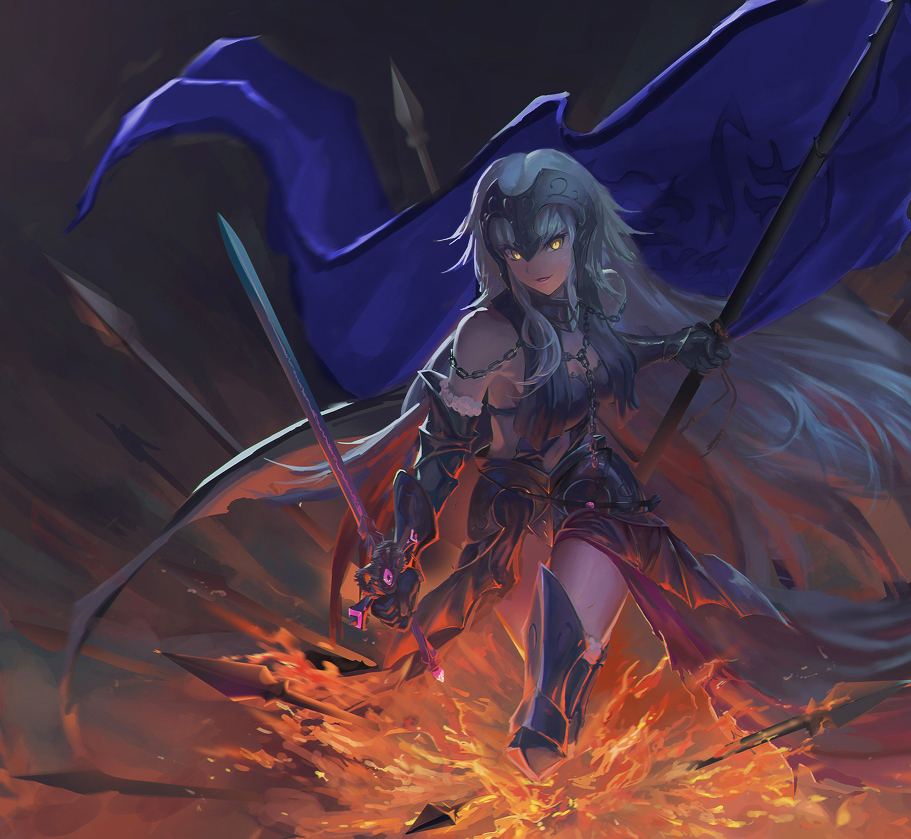

1974 - (46 let)
Císař:
Tituly:
Manžel: Yuanyen
Rodiče: Žuan Jin
Děti: Hwoňao, Yueli
Miaočwuaŋ Feŋ je dowažei a regent Říše Hwaža. Za Dlouhé místovlády působila jako regentka za císaře Hwoňao jako samozvaná "Císařovna-regent", první žena v historii Říše držící titul císaře. Během jejího působení dovedla Říši k bezměrné jednotě, skrze neúprosnou vládu a manipulaci s úředníky. Poté, co její syn dosáhnul dospělosti, se vzdala titulu císařovny, ovšem si ponechala titul místovladařky a dovažei, jelikož Hwoňao nemá manželku.
Miaočwuaŋ se narodila jako Miao Kačeŋ, nejmladší ze třech dětí, v hornickém představeném měste komandérie Yišan, Sailao. Její otec působil jako mistr stavebnictví a matka jako knihovnice. Většinu brzkého mládí trávila staráním se o tězce nemocného bratra.
Rodiče Miao si přáli, aby se vyučila švadlenou a pracovala u podniku rodinných přátel, prosba, které se neřídila díky doporučení učitelů na Aimangiské provinční nižší škole, kteří v ní viděli nadání pro neumělecké vědy.
Po vystudování nižší školy navštěvovala Aimangskou střední univerzitu v oboru silozpyt (TL Note: archaický název pro fyziku). Po napsání práce o reakcích ve střelném prachu pokračovala studiem na vyšší univerzitě, kterou ukončila složením Císařské zkoušky.
Při Císařské zkoušce se seznámila s mladým císařem Yuanyenem, který na ni zapůsobil tak, že si vyžádala pozici jako Poradkyně pro zemědělské věci v Zakázaném městě ve Šweizenu, kterou, díky téměř perfektním výsledkům, získala.
I přes přání rodičů se na druhý rok na jaře přestěhovala a začala působit v hlavním městě, právě procházejícím nedostatkem jídla z důvodu dlouhodobého npřížnivého počasí a neochotě komandérií poskytnout pomoc. Mezi snahami o okouzlení Yuanyena implementovala nová hnojiva a způsoby pečení, které odvrátily nebezpečí hladomoru. V této době se seznámila s Caoyonem, komisařem komandérie Lia, který se ji neúspěšně pokusil svést.
Její pokusy o získání Yuanyena komplikovala nutnost bydlet a většinu pracovní doby trávit mimo Zakázané město. S Yuanem trávila více času zaléváním květin v Síni nebeského klidu. K vyznání lásky ji vedl příkaz komisaře domovské provincie k návratu zpět do Sailao, kam se sama vrátit nechtěla. Then they dated, idk.
K roku 2002 byla uvedena jako pátá Dovažei dynastie Feŋ Miaočwuaŋ Gosin. Během dalších několika let z dobré vůle postupně přebírala Yuanyenovy fuknce, dokud prakticky nevládla za něj. V létě 2003 porodila, po několika potratech, následovníka trůnu Čužíwana. V pozici dovažei zabránila svým drsným jednáním a úplatky několika vzpourám. Největší nebezpečí pro ni po celou dobu představoval Caoyon, který disponoval nejlidnatější komandérií a silným motivem.
I přes svůj nekompromisní způsob vlády byla občany oblíbená. Při psaní dekretů se zaměřovala na zlepšení situace středních a nižších vrstev. U úředníků byla, naopak, neoblíbená; většina pociťovala, že jim její autoritářská politika odebírá samostatnost.
Opačně se chovala ke svému synovi, kterému poskytovala nadprůměrnou volnost, i přes protesty učitelů, kteří se obávali, že nebude Čužíwan psychicky schopný v dospělosti vést Říši.
V zimě 2009 dorazila do Zakázaného města na žádost Yuanyena Nealinská delegace. Zpočátku Nealin nepovažovala za nic více, než Gisuny, ke kterým byla nesmírně nepřátelská. Jelikož si ovšem uvědomovala nutnost je získat na stranu Císařského dvora dříve, než by se spojili s jinými mocenskými strukturami v Říši, zaujala Miao k Nealin nakonec vřelý postoj. Krátce po odjezdu delagace Yuanyen z vlastní vůle abdikoval a vládu přenechal svému šestiletému synovi, který byl uveden jako šestý císař dynastie Feŋ pod jménem Hwoňao Isarkiv. Miao za mladého syna vedla regenční komisi.
Aby Isarkiva připravila na častý kontant s Nealin přivedla z Šačenu sedmiletou Gisunskou holčičku, kterou pojmenovala po nedávno zesnulém příbuzném, Geren.
Půl roku po převzetí vlády se musela vypořádat z první vzpourou, která požadovala návrat populárního Yuana na post císaře. S Yuanovou pomocí ji udusila, ovšem si uvědomila křehkost své pozice. Aby vybudovala podporu pro svou vládu, vytvořila si nový titul "Císařovna-regent"; Císařovna označovala autoritu jí svěřenou nezletilým synem a předchozím císařem. Tento titul je i nadále používaný všemi ostatními dovažei.
Mezi největší úspěchy její vlády patří rozšíření železnice za Yaŋgin, tvrdé potlačování vzpour vedoucí ke stabilizaci situace v Hazi Yisunu (od vzpour až po nájezdy z Gisunského guruchátu), omezení práv komandérií (jednotnější měnová a vojenská politika), udržování stálého kontaktu a obchodu s Nealin a celoříšská implementace nových metod pěstování a sklizně obilovin.
Autoritu a respekt si udržovala skrze podplácení, popravy a nekompromisnost. Pro obyčejného člověka bylo ovšem období její vlády tím nejlepším za poslední desítky let.
V roce 2011 porodila druhé dítě, holčičku, kterou pojmenovala Yue (HYu: měsíc).
I před neustálé námitky od učitelů dávala synovi extrémní volnost. Neřešila množství přestupků, kterých se dopouštěl; byla přesvědčená, že mu tím dá příležitost učit se a sbírat zkušenosti mimo zájmy učitelů, a v budoucnosti bude schopný lépe jednat samostatně. Tento způsob výchovy mu sice umožnil nabrat bohaté zkušenosti, ovšem ne vždy ty relevantní. Jako mladý také pozvýbal sebevědomí a po téměř celou vládu konzultoval svou politiku s Miao.
Hwoňao Isarkiv se ujal vlády v létě 2021 ve věku 18 let. Miao se vzdala titulu císařovny, ovšem stále držela titul dovažei, který patří výhradně manželce císaře, a místovládkyně, který obvykle držel Kancléř funkcí vázaných k blahobytu císaře a jeho rodiny. Dispozice oběma jí umožnila lehce spravovat zemi v době synovy nepřítomnosti či neschopnosti a díky jejich kombinaci disponovala mnohem širšími právy.
Během Isarkivovy diplomatické mise do Nealiu zůstala ve Šweizenu. Po jeho návratu nařídila týdenní státní smutek a posmrtně odebrala Geren všechny funkce a vyznamenání. Na přání císaře se ujala funkce Kancléřky okupovaných území a krutě potlačovala jakékoliv náznaky nesouhlasu s Říšskou vládou. Na všech školách území Hazi Yisunu nařídila povinnou výuku Yuyiyanu, ovšem toto nařížení vydrželo necelý rok, po kterém bylo na přání císaře zrušeno.
V měsící po popravě Geren se často setkávala s Nealiunskou Assaneou Zibirheou, která dočasně pobývala v Zakázaném městě. Ke konci její návštěvy Zibirhei věnovala obrovský bitevní portrét, oslavující spojenectví mezi Říší a Nealiu.
Miao poté dostala za úkol podněcovat nájezdy na Gisunský guruchát ze strany necivilizovaných kmenů na severo-východě.
Miao se opět chopila vlády po vzpouře komandérie Lia, aby dala císaři možnost vypořádat se s rebely o samotě a získat tímto respekt. Během celého incidentu udržovala komisaře ve Šweizenu, aby synovi dala více času na poražení Caoyona.
Po poražení a uvěznění Caoyona navrhnula, aby byl přiznal kolaboraci s nepřáteli lidu Říše, vykastrován a propuštěn do ulic Sweizenu. Jeho osud je neznámý. Jako nového komisaře Lia navrhnula svého známého, ředitele Direktoria pro palácové ceremonie, Zua.
Po většinu Fumanských reforem se ve vládě angažovala pouze v poradenské pozici, aby si měl Hwoňao příležitost vybudovat autoritu.
Dlouhodobý útlak ze strany Říše vyústil v roce 2027 v rozsáhlé vzpoury na území Hazi Yisunu. Většina protestujících pocházela z venkovských částí území, všechna větší města podporavala Říši (kvůli většímu procentu Říšské populace a ekonomickému růstu, který přišel s investicemi). Vzbouřenci považovali svobodu od Říšské nadvlády a sjednocení s Gisunských guruchátem.
Císař nařídil stáhnutí Císařského vojska z většiny území Hazi Yisunu a jeho připojení ke gurucházu s podmínkou, že zůstane Taizy (GiM: nejvyšší poradce) pro sjednocený guruchát a města s obyvatelstvem nad 150 000 lidí zůstanou ve vlastnictví Říše, chráněna Císařským vojskem. Vzbouřenci na jeho podmínky přistoupili.
Během následujících osmi let Miao zvyšovala agresivitu severních nájezdů na guruchát. V roce 2035 požádal Nimah Gisunu o opětovné připojení k Říši a ochranu před vpády, na které Císařský dvůr přistoupil. V zimě 2035 se celý Gisun stal šestou Říšskou komandérií a Miao vybrána jako její kancléřka. Nepodařilo se jí ovšem zastavit vpády severních kmenů, neúspěch vedoucí k Velkému pochodu na východ o dva roky poté.